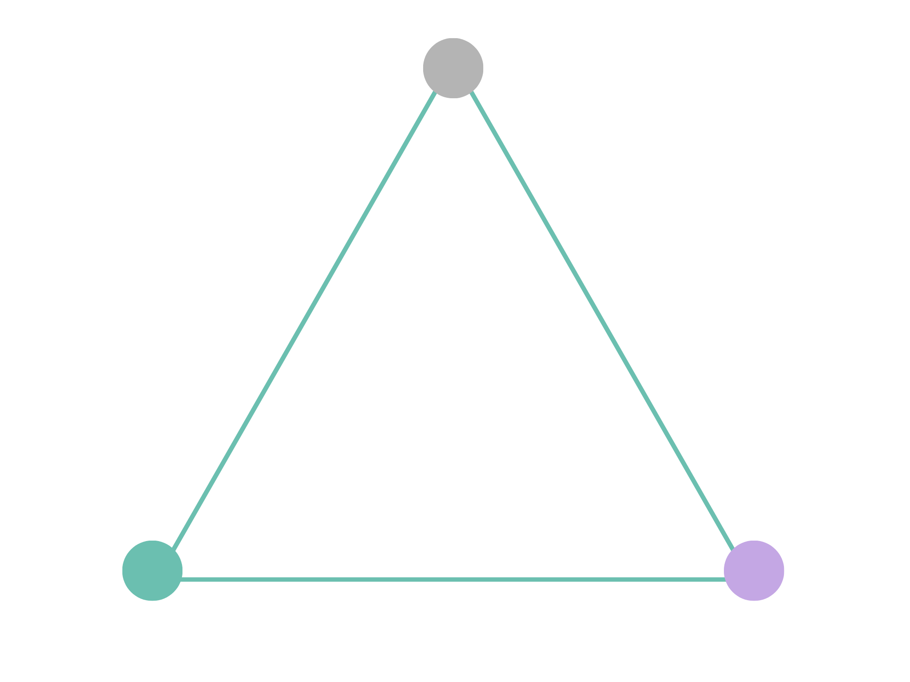

The Recognition Diagnostic
Where does your brand sit
on the Recognition Triangle?
The Recognition Diagnostic is a free GEO audit tool and AI brand visibility check. In 15 questions across three dimensions it gives you a brand authority assessment: one of six results and a clear picture of where you stand and where to invest first. Think of it as an AI search visibility score across the three dimensions that decide whether AI systems cite you.
15 questions
About 5 minutes
One of six patterns
Free

Clarity: how clearly your brand communicates what you stand for
Credibility: the external signals that verify your expertise
Earned Authority: the independent ecosystem validation that makes you impossible to overlook
Based on the Recognition Triangle, the diagnostic model from Become the Answer by Lucy Aingworth
Your progress
1 of 15